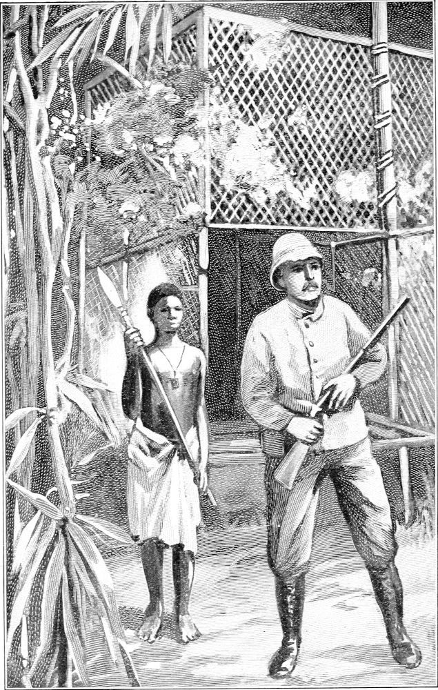

Daily Life and Scenes in the Jungle—How I Passed the Time—What I Had to Eat—How it was Prepared—How I Slept—My Chimpanzee Companion
I am so frequently asked about the details of my daily life in the cage, how the time was occupied, and what I saw besides the apes, that I deem it of interest to relate a few of the events of my sojourn in that wild spot. I shall, therefore, recount the incidents of a single day and night; but from day to day of course this routine varied.
About six o’clock, as the sun first peeps into the forest, it finds me with a tin cup of coffee just made on a little kerosene stove. It is black and dreggy, but with a little sugar it is not bad. With a few dry crackers I break my fast of twelve hours and am now ready for the task of the day. My bed having been rolled up out of the way and Moses helped to a banana or two, I take my rifle, Moses climbs upon my shoulder, and we set out for a walk in the bush. When we return we bring from the spring, some three hundred yards away, a supply of water for the day. Then Moses climbs about in the bushes and amuses himself, while I watch for gorillas. Silence is the order of the day. And here I sit alone,—sometimes for hours,—in a stillness almost as great as that of a tomb.

STARTING FOR A STROLL
(From a Photograph.)
Presently a rustle of the leaves is heard, and a porcupine comes waddling into view. He pokes his nose about in search of food, but he has not yet discovered my presence. He comes closer. The scent or sight of me startles him, and away he goes. Now a civet comes stealing through the bush, till he observes me and hastily departs.
After an hour of patient waiting the sound of clashing boughs is heard. A few minutes later is seen a school of monkeys, led by a solemn-looking old pilot, who doubtless knows every palm tree that bears nuts within many miles around. They are now coming to inspect my cage and see what new thing this is set up in monkeydom.
A Peep at My Cage
As they draw nearer they become more cautious. They find a strong bough in the top of a big tree, and the grave old pilot perches himself far out on it in order to get a good peep at my cage. Just behind him sits the next in rank, resting his hands on the shoulder of the leader, while a dozen more occupy similar attitudes behind each other along the limb. Each one pushes the one just in front of him to make him move up a little closer, but none of them except the pilot seems to want the front seat.
They look on in silence, occasionally turning their little heads from side to side, as if to be certain it is not an illusion. Again they nudge each other, and move up a little closer, meanwhile squinting their bright eyes, as if in doubt about the strange sight before them. They have made such calls before, but have not yet fully determined what kind of an animal it is that occupies the cage. At each successive visit they come a little nearer, until they are now not a hundred feet away. Now they take alarm at something and hurry off in another direction.
Next comes a pangolin, prowling about for insects among the leaves. He catches a glimpse of the cage, stands motionless for a moment to see what it is, and then like a flash he is gone. During this time birds of divers kinds are flying in all directions. Some of them perch on the limbs near by, some pick nuts from the palm trees, while others scream and screech like so many tin whistles or brass horns. The most conspicuous among them are the noisy toucans and parrots. Many of them have brilliant and beautiful plumage.
It is now ten o’clock. Not a breath of air stirs a leaf of the great forest. The heat is sweltering and oppressive. The voices of the birds grow less and less frequent. Even the insects do not appear to be so busy as they were in the earlier hours of the day. Moses has abandoned his rambles in the bush, and sits on a fallen tree, with his arms folded, as if he had finished work for the day.
Along towards this hour everything in the forest seems to become quiet and inactive, and continues so until about two o’clock in the afternoon. I was impressed upon more than one occasion with this universal rest during the hottest part of the day, and the same thing seems to prevail among aquatic animals.
I now prepare my repast for midday by opening a can of meat or fish, and warming it on a tin plate on the little stove. I have no vegetables or dessert, but with a few crackers broken up and stirred into the grease, and plenty of water to drink, I make an ample meal. When it is finished, Moses coils up in his little hammock, swung by my side, and takes his siesta. The boy, when there, stretches out on the floor and does likewise. During the hours about noon, few things are astir, though during that time I have seen some interesting sights.
It must not be supposed that the change is sudden at the beginning or at the end of this period, for such is not the case. There is no fixed time for anything to cease activity. It is by slow degrees that one thing after another becomes quiescent, until life appears to be for a time almost extinct; but as the sun descends the western sky, life and activity revive, and by three o’clock everything is again astir. Now, a lone gorilla comes stalking through the bush, looking for the red fruit of the batuna, a peculiar fruit that grows near the root of the plant. He plucks a bud of some kind, tears it apart with his fingers, smells it, and then throws it aside. Now he takes hold of a tall sapling, looks up at its shaking branches and turns away. He pauses and looks around as if suspicious of danger. He listens to see if anything is approaching, but being reassured he resumes his search for food. Now he gently parts the tangled vines that intercept his way and creeps noiselessly through them. He hesitates, looks carefully around him, and then again proceeds. He is coming this way. I see his black face as he turns his head from side to side, looking for food. What a brutal visage! It has a scowl upon it, as if he were at odds with all his race. He is now within a few yards of the cage, but is not aware of my presence. He plucks a tendril from a vine, smells it, and puts it into his mouth. He plucks another and another. I shall note that vine and ascertain what it is. Now he is in a small open space where the bush has been cut away so as to afford a better view. He seems to know that this is an unusual thing to find in the jungle. He surveys it with caution. He comes nearer. Now he has detected me. He sits down upon the ground and looks at me as if in utter surprise. A moment more he turns aside, looks over his shoulders, and hurries away into the dense jungle.
It is now four o’clock. I hear a wild pig rooting among the fallen leaves. I see a small rodent that looks like a diminutive hedgehog. He is gnawing the bark from a dead limb, possibly to capture some insect secreted under it. But as rodents usually live upon vegetable diet, he may have some other reason for this.
It is five o’clock and the shadows in the forest are beginning to deepen. I see two little gray monkeys playing in the top of a very tall tree. The birds become monotonous and tiresome. Yonder is a small snake twined around the limb of a bushy tree. He is probably hunting for a nest of young birds. The low muttering sound of distant thunder is heard. Little by little it grows louder. It is the familiar voice of the coming tornado. I must prepare for it.
The stove is now lighted and a shallow pan of water is set upon it. Into it is stirred an ounce of desiccated soup. It is heated to the boiling point, and is then set on the swinging table. A can of mutton is emptied into another pan of the same kind, and a few crackers are broken and stirred into the mutton. The soup is eaten while the meat is being warmed. This is now ready, and the flame of the stove is turned off. The second course of dinner is now served. It consists of canned mutton, crackers, and water. The dishes, consisting of three tin platters and a cup, are thrust into the adjacent bush. The ants and other insects will clean them during the night.
Moses has now had his supper and has gone to his own little house, to find shelter from the approaching storm. The curtains are hung up on the side of the cage towards which the tornado is coming. The leaves of the forest begin to rustle. It is the first cool breath of the day, but it is the herald of the furious wind that is rapidly advancing. The tree-tops begin to sway. Now they are lashing each other as if in anger. The strong trees are bending from the wind. The lightning is so vivid that it is blinding. The thunder is terrific. One shaft after another, the burning bolts are hurled through the moaning forest.
Down the frail wires of my cage the water runs in little rivulets. Acting as a prism, it refracts the vivid lightning and makes the whole fabric look like a latticework of molten fire trickling down from the overhanging boughs. Like invisible demons the shrieking winds rush through the bending forest, and the unceasing roar of the thunder reverberates from the dark recesses of the jungle. Amid the din of storming forces is heard the dull thud of falling trees, and the crackling limbs are dropping all around. All nature is in a rage. Every bird and every beast now seeks a place of refuge from the warring elements. No sign of life is visible. No sound is audible save the voice of the storm. How unspeakably desolate the jungle is at such an hour no fancy can depict. How utterly helpless against the wrath of nature a living creature is no one can realize, except by living through such an hour in such a place.
On one occasion five large trees were blown down within a radius of a few hundred feet of my cage. Scores of limbs were broken off by the wind and scattered like straws. Some of them were six or eight inches in diameter and ten or twelve feet long. One of them broke the corner of the bamboo roof over my cage. The limb was broken off a huge cotton tree near by and fell from a height of about sixty feet. It was carried by the wind some yards out of a vertical line as it fell, and just passed far enough to spare my cage. Had it struck the body of it, the cage would have been partly demolished; the main stem of the bough was about six inches in diameter and ten feet long. This particular tornado lasted for nearly three hours and was the most violent of all I saw during the entire year.
Now the storm subsides, but the darkness is impenetrable. I have no light of any kind, for that would alarm the inhabitants of the jungle and attract a vast army of insects from all quarters. Moses is fast asleep, while I sit listening to the many strange and weird sounds heard in the jungle at night. The bush crackles near by. A huge leopard is creeping through it. He is coming this way. Slowly, cautiously, he approaches. I cannot see him in the deep shadows of the foliage, but I can locate him by sound, and identify him by his peculiar tread. Perhaps when he gets near enough he will attack the cage. He is creeping up closer. He evidently smells prey and is bent on seizing it. My rifle stands by my elbow. I silently raise it and lay it across my lap. The brute is now crouching within a few yards of me, but I cannot see to shoot him. I hear him move again, as if adjusting himself to spring upon the cage. He surely cannot see it, but by means of scent he has located me. I hear a low rustling of the leaves as he swishes his tail preparatory to a leap. If I could only touch a button and turn on a bright electric light! He remains crouching near, while I sit with the muzzle of the rifle turned towards him. My hand is on the lock. It is a trying moment. If he should spring with such force as to break the frail network that is between us, there could be but one fate for me.
In the brief space of a few seconds a thousand things run through one’s mind. They are not necessarily prompted by fear, but rather by suspense. Is it best to fire into the black shadows or to wait for the leopard’s attack? What is his exact pose? What does he intend? How big is he? Can he see me? A category of similar questions rises at this critical moment.
A clash of bushes and he is gone; not with the stealthy, cautious steps with which he advanced, but in hot haste. He has taken alarm, abandoned his purpose, and far away can be heard the dry twigs crashing as he hurries to some remote nook. He flees as if he thought he was being pursued. He is gone, and I feel a sense of relief.
It is ten o’clock. The low rumbling of distant thunder is all that remains of the tornado that swept over the forest a few hours ago. The stars are shining, but the foliage of the forest is so dense, that one can only see here and there a star peeping through the tangled boughs overhead. I hear some little waif among the dead leaves, but what it is or what it wants can only be surmised.
Another hour has passed, and I retire for the night. The sounds of nocturnal birds are fewer now. I hear a strange, tremulous sound from the boughs of the bushes near the cage. The leaves are vibrating. The sound ceases and again begins at intervals. I listen with attention, for it is a singular sound. It is the movement of a huge python in search of birds. He reaches out his head, stretches his neck, grasps the bough of a slender bush, releases his coil from another, and by contraction draws his slimy body forward. The pliant bough yields to his heavy weight. The abrasion causes it to tremble and the leaves to quake.
PREPARING FOR THE NIGHT
(From a Photograph.)
I fall asleep and rest in comfort, while the dew that has fallen upon the leaves gathers itself into huge drops; their weight bends the leaves, and they fall from their lofty place, striking with a sharp, popping sound the big leaves far below them. The hours fly by; but in the stillness of early morning is heard a most unearthly scream. It is the voice of a king gorilla. He makes every leaf in the forest tremble with the sound of his piercing shrieks.
Thus another night is erased from the calendar of time and another day begins. The dawn awakes to life the teeming forest, and all its denizens again go forth to join the universal chase for food.
All of the incidents here cited are true in every detail, but they did not occur every day, nor did all of them occur on the same day, as might be inferred from the manner in which they are related. But this recital gives a fair idea of the daily routine in the bosom of the great forest, although this is a mere glimpse of the scenes of life in the jungle. By going out for a day or two at a time, hunting on the plains a few miles away, I often relieved the monotony. My menu was occasionally varied by a mess of parrot soup, a piece of goat, fish, or porcupine; but the general average of it was about as has been described.